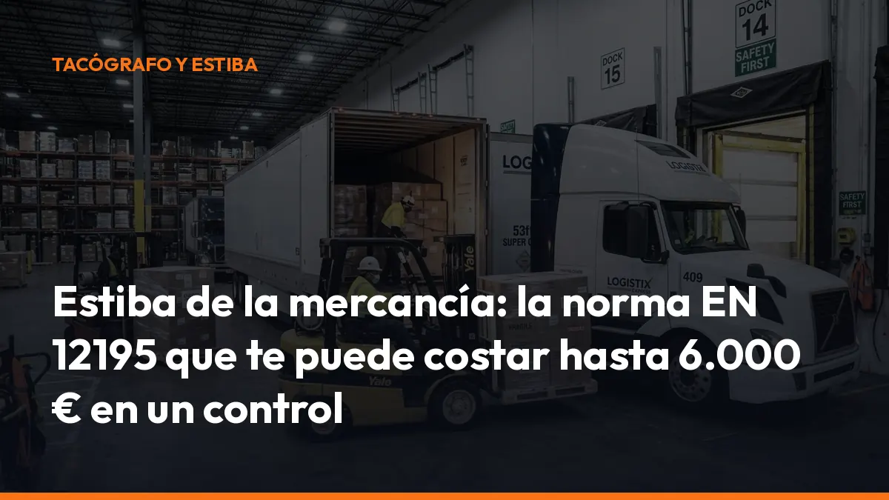

Estiba de la mercancía: la norma EN 12195 que te puede costar hasta 6.000 € en un control

Una carga mal sujeta puede provocar un accidente, dañar la mercancía y detener tu camión en carretera.
Además, la estiba de la mercancía está sometida a criterios técnicos concretos. En España, la referencia principal es la EN 12195, integrada en el marco de inspecciones del Real Decreto 563/2017.
Y el riesgo no es pequeño:
Hasta 6.000 € de sanción.
Inmovilización del vehículo.
Pérdida de tiempo, retrasos y costes adicionales.
La solución empieza antes de salir. Revisa la carga, calcula las fuerzas y utiliza los elementos de amarre adecuados. Hazlo en minutos y evita que un control convierta una ruta normal en una pérdida importante.
Qué exige la norma EN 12195
La norma EN 12195-1 establece cómo calcular las fuerzas que debe soportar la sujeción de la carga durante el transporte por carretera.
No basta con colocar varias cinchas. Debes demostrar que la mercancía no puede desplazarse, volcar ni caer en una frenada, una curva o una maniobra de emergencia.
La inspección puede comprobar:
- Estabilidad: la carga no debe desplazarse durante la circulación.
- Resistencia: las cinchas, cadenas, cables y otros elementos deben soportar las fuerzas previstas.
- Bloqueo: los huecos entre palés, bultos y paredes deben eliminarse o controlarse.
- Puntos de amarre: deben ser adecuados, suficientes y estar en buen estado.
- Distribución del peso: la masa debe repartirse correctamente entre los ejes.
- Protección: las aristas no deben cortar ni deteriorar las cinchas.
- Estado del vehículo: suelo, laterales, puertas y puntos de sujeción deben funcionar correctamente.
El Real Decreto 563/2017 utiliza estas referencias técnicas en las inspecciones en carretera de vehículos comerciales. En la práctica, una deficiencia visible puede obligarte a corregir la estiba antes de continuar.
No esperes al control. Revisa la carga en el muelle o antes de abandonar la base.
Las sanciones por una mala estiba en España
La gravedad depende del riesgo que genere la deficiencia. No es lo mismo una etiqueta ilegible que una carga a punto de caer a la vía.
Como referencia operativa, las sanciones pueden clasificarse así:
INFRACCIÓN LEVE
Hasta 300 €
Se aplica cuando existe una deficiencia menor que no genera un riesgo relevante de desplazamiento o caída.
Ejemplos habituales:
- Cincha con identificación deteriorada, pero todavía verificable.
- Pequeña deficiencia en la disposición de los elementos.
- Falta de algún elemento auxiliar sin riesgo inmediato.
INFRACCIÓN GRAVE
De 801 a 1.500 €
Puede producirse cuando la sujeción es insuficiente y existe riesgo de desplazamiento, caída parcial o afectación a la seguridad.
Ejemplos:
- Pocos amarres para el peso transportado.
- Carga con huecos que permiten movimiento.
- Cinchas mal colocadas o sin protección frente a aristas.
- Puntos de amarre insuficientes o deteriorados.
- Peso mal distribuido con riesgo sobre un eje.
INFRACCIÓN MUY GRAVE
De 4.001 a 6.000 €
Es el escenario más peligroso. Se relaciona con un riesgo inminente de caída a la calzada, vuelco o grave peligro para otros usuarios.
Además de la multa, la autoridad puede ordenar la inmovilización del vehículo hasta que se corrija la situación.
La Ley de Ordenación de los Transportes Terrestres, especialmente su régimen sancionador, contempla la responsabilidad administrativa y las medidas de inmovilización cuando existen conductas que comprometen la seguridad.
No arriesgues una ruta completa por salir cinco minutos antes. Corrige la carga antes de circular.
Cómo calcular el amarre de forma sencilla
El cálculo exacto depende del tipo de mercancía, el coeficiente de fricción, los ángulos, la capacidad de las cinchas y el sistema de bloqueo. Sin embargo, puedes utilizar una primera comprobación práctica basada en las aceleraciones de referencia de la EN 12195-1.
La carga debe estar preparada, como mínimo, para soportar:
- Hacia delante, durante una frenada: 0,8 veces el peso de la carga.
- Hacia los laterales, en curvas: 0,5 veces el peso de la carga.
- Hacia atrás, durante una aceleración o maniobra: 0,5 veces el peso de la carga.
Ejemplo rápido: 1.000 kg de mercancía
Si transportas una carga de 1.000 kg, la comprobación inicial sería:
Hacia delante: 0,8 × 1.000 = 800 daN
Hacia cada lateral: 0,5 × 1.000 = 500 daN
Hacia atrás: 0,5 × 1.000 = 500 daN
El daN es una unidad habitual en las etiquetas de los elementos de amarre. Para una estimación rápida, 1 daN equivale aproximadamente a 1 kg de fuerza.
Pero cuidado: esto no significa que puedas colocar una cincha de 800 daN y dar el cálculo por terminado. Debes revisar:
- La LC, o capacidad de amarre de la cincha.
- La STF, si utilizas amarre por fricción.
- El ángulo que forma la cincha.
- El coeficiente de fricción entre la mercancía y el suelo.
- La presencia de bloqueo frontal, lateral o trasero.
- La resistencia de los puntos de amarre.
Este cálculo es una orientación inicial. Para cargas pesadas, mercancías inestables, bobinas, maquinaria, acero, vidrio o transporte especial, utiliza un cálculo completo conforme a la norma y a las instrucciones del fabricante.
Los tres métodos principales de sujeción
1. Bloqueo de la carga
Utiliza paredes, topes, cuñas, barras, travesaños o materiales de relleno para impedir que la mercancía se mueva. Es la opción más directa cuando puedes colocar la carga contra la pared frontal o utilizar separadores resistentes.
Beneficio práctico: reduces el movimiento antes de que las cinchas tengan que soportar toda la fuerza.
2. Amarre directo
Las cinchas, cadenas o cables conectan directamente la mercancía con los puntos de amarre del vehículo.
Este sistema es habitual en maquinaria, estructuras, bobinas o cargas que no pueden bloquearse completamente.
Beneficio práctico: la sujeción trabaja directamente contra el desplazamiento de la carga.
3. Amarre por fricción
Las cinchas pasan por encima de la mercancía y aumentan la presión contra el suelo. Esa presión mejora la fricción y dificulta el movimiento.
Aquí son determinantes:
- La tensión aplicada.
- El ángulo de la cincha.
- El tipo de suelo.
- El material de la carga.
- El uso de alfombras antideslizantes.
Beneficio práctico: una buena superficie antideslizante puede reducir la dependencia exclusiva de las cinchas.
En muchos casos, la solución más segura es combinar bloqueo, fricción y amarre directo.
Checklist de estiba antes de salir
Haz esta revisión antes de cerrar las puertas:
- Peso confirmado: comprueba el peso total y la distribución por ejes.
- Carga estable: coloca los bultos pesados abajo y evita torres inestables.
- Huecos eliminados: utiliza relleno, separadores o bloqueo cuando sea necesario.
- Cinchas homologadas: revisa la etiqueta, la LC y la STF.
- Sin daños: retira cinchas con cortes, desgaste, deformaciones o costuras deterioradas.
- Protectores colocados: protege las aristas que puedan cortar el tejido.
- Tensión correcta: aprieta sin deformar la mercancía ni dañar los embalajes.
- Puntos revisados: confirma que los anclajes del vehículo están firmes.
- Puertas cerradas: verifica que laterales y puertas no se utilizan como bloqueo si no están diseñados para ello.
- Revisión final: vuelve a comprobar la carga después de los primeros kilómetros si la operación lo permite.
Una fotografía de la carga terminada puede ayudarte a documentar el estado de la expedición internamente. No sustituye la responsabilidad de una estiba correcta, pero mejora el control operativo de tu empresa.
Estiba y documentación: controla las dos partes del porte
La seguridad de la carga y la documentación forman parte del mismo objetivo: llegar a destino sin incidencias.
Puedes llevar una carga perfectamente sujeta y, aun así, tener problemas si no dispones de la documentación de control que necesitas durante la ruta. En un control, el agente puede solicitar información sobre el servicio, el origen, el destino y la mercancía transportada.
Con Mi Carga puedes generar desde el móvil tus documentos de transporte y cartas de porte en PDF. La aplicación te permite:
- Generación instantánea: crea tus documentos en segundos.
- Disponibilidad inmediata: accede a ellos desde la cabina o el móvil.
- Archivo automático: conserva tus PDFs en la nube.
- Código QR: facilita la consulta del documento durante una inspección.
- Documentos ilimitados: utiliza el servicio sin pagar por cada porte emitido.
Mientras Mi Carga resuelve la parte documental, tú puedes dedicar el tiempo ahorrado a revisar la mercancía, las cinchas y los puntos de amarre.
Empieza con 10 transportes gratis
No esperes a que una inspección te obligue a modernizar tu operativa.
Sin tarjeta.
Sin compromisos.
Sin pasar por una tienda.
Después, si necesitas documentos ilimitados, puedes elegir el plan de 10 €/mes, IVA incluido, o el plan anual de 90 €/año.
Genera tu documentación al instante, guárdala de forma segura y mantén el control de cada servicio desde el móvil.
Revisa la estiba. Genera la documentación. Sal a ruta con todo bajo control.
Solicitar alta gratuita · Escribir por WhatsApp
Preguntas frecuentes sobre la estiba de la mercancía
¿Qué norma regula la sujeción de la carga?
La referencia técnica principal es la EN 12195-1, que establece criterios para calcular las fuerzas de amarre. También se relaciona con normas sobre cinchas, cadenas, cables y puntos de amarre.
¿Me pueden inmovilizar el camión por una mala estiba?
Sí. Cuando la carga genera un peligro para la seguridad vial o existe riesgo de caída, la autoridad puede ordenar la inmovilización hasta que se corrija la deficiencia.
¿Cuánto puede costar una sanción?
Según la gravedad, la sanción puede llegar hasta 6.000 €. Como referencia, una infracción leve puede alcanzar 300 €, una grave situarse entre 801 y 1.500 € y una muy grave entre 4.001 y 6.000 €.
¿Es suficiente llevar varias cinchas?
No. El número de cinchas no garantiza por sí solo una estiba correcta. Debes considerar el peso, la LC, la tensión, los ángulos, la fricción, el bloqueo y el estado de los puntos de amarre.
Aviso: este artículo tiene finalidad informativa y no sustituye el texto oficial de la norma EN 12195, la revisión del baremo sancionador aplicable ni el asesoramiento técnico o jurídico profesional. Para resolver dudas sobre documentación digital, escribe a soporte@micarga.es.
Crea tu cuenta en app.micarga.es y prueba tus 10 primeros transportes sin coste.
DeCA, carta de porte y ADR, en PDF, con QR y archivo automático en la nube.
Empezar con 10 documentos gratisArtículo informativo. Consulta siempre el caso concreto de tu operación. ¿Dudas? Escríbenos.